TRACE banners
Real captures of the Release WebAssembly build, one session at DPR 3. Each image opens its 2x export (or the hero). Picks: focus-pump and stylized-split.
Showcase
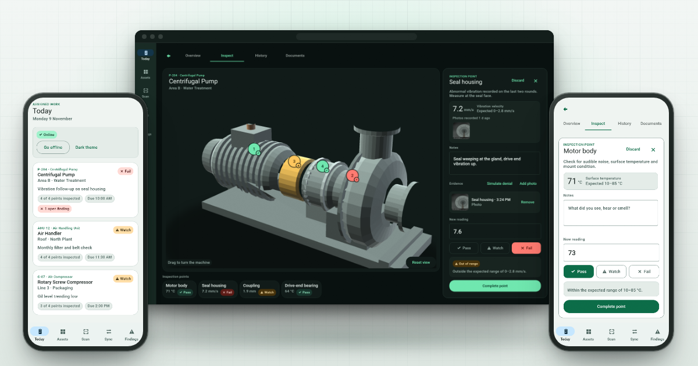
showcase-desk P-204's Inspect tab with the seal housing reading ready (Dark window) between Today and the Motor body point sheet (Light phones). 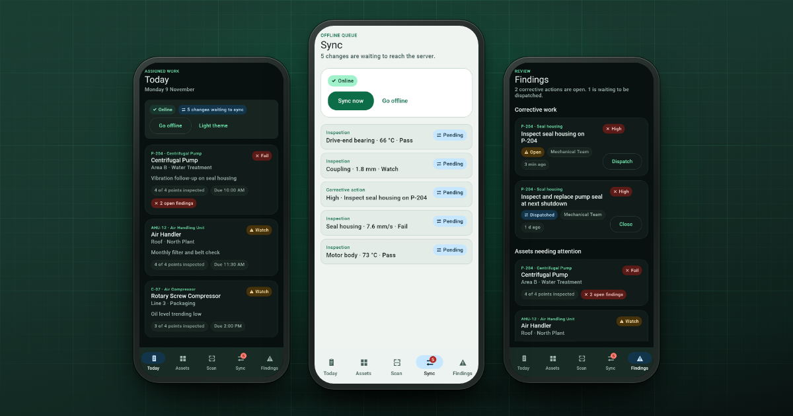
showcase-phones After the round: Today with five changes waiting (Dark), the Sync queue (Light, centre) and Findings (Dark), on field green. 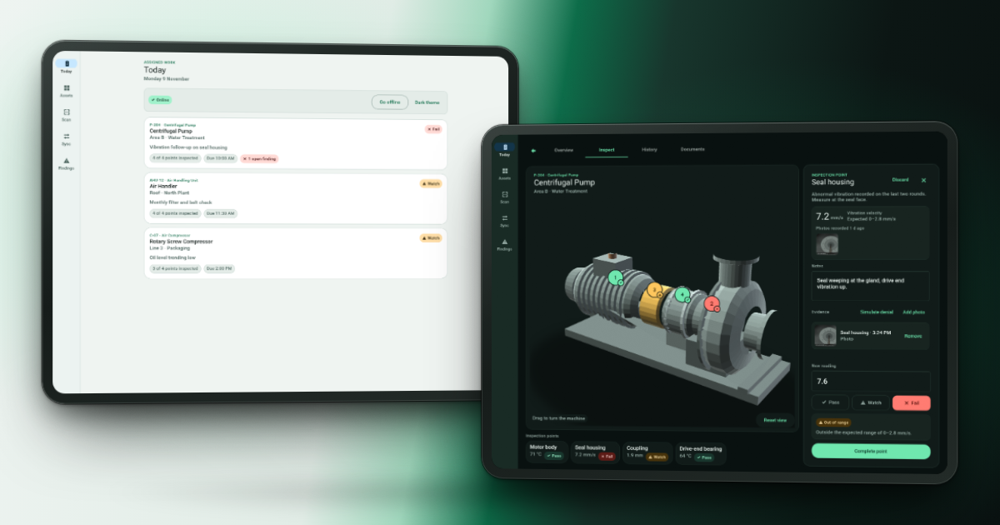
showcase-daynight Today's round on a Light tablet and the pump inspection on a Dark tablet, on a day-to-night green.
Focused
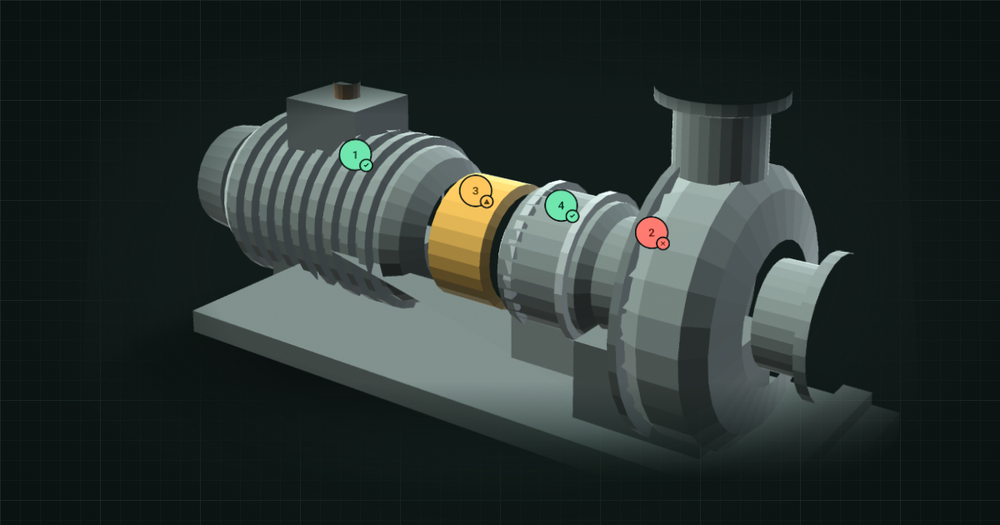
focus-pump · pick P-204, the CPU-drawn 3D centrifugal pump, with its four inspection points: Pass, Fail, Watch and Pass. 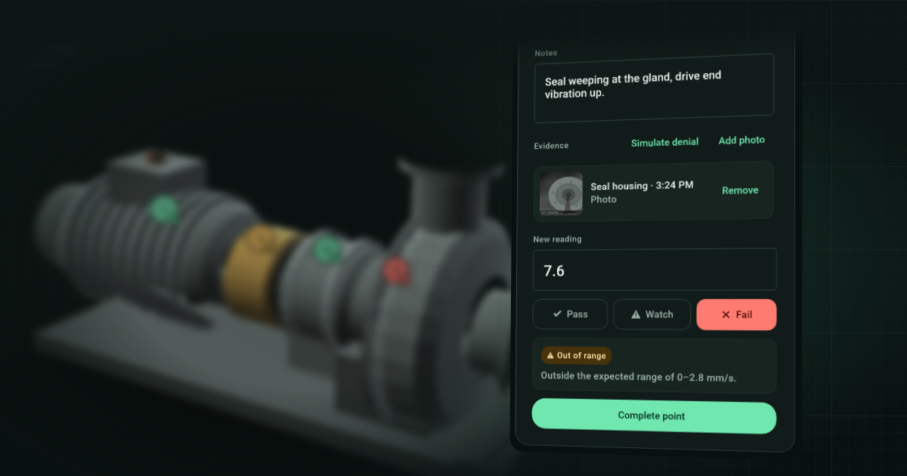
focus-inspector The point inspector at the moment of the call: 7.6 mm/s, out of range, Fail, a note and a photo, the pump blurred behind. 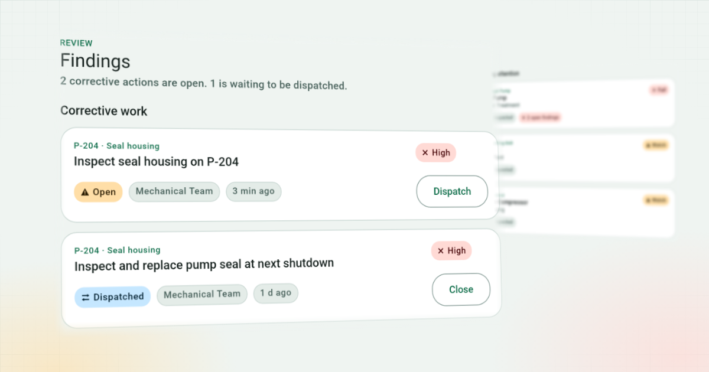
focus-findings Findings: the new High action raised from the seal housing, ready to dispatch, above yesterday's, ready to close. 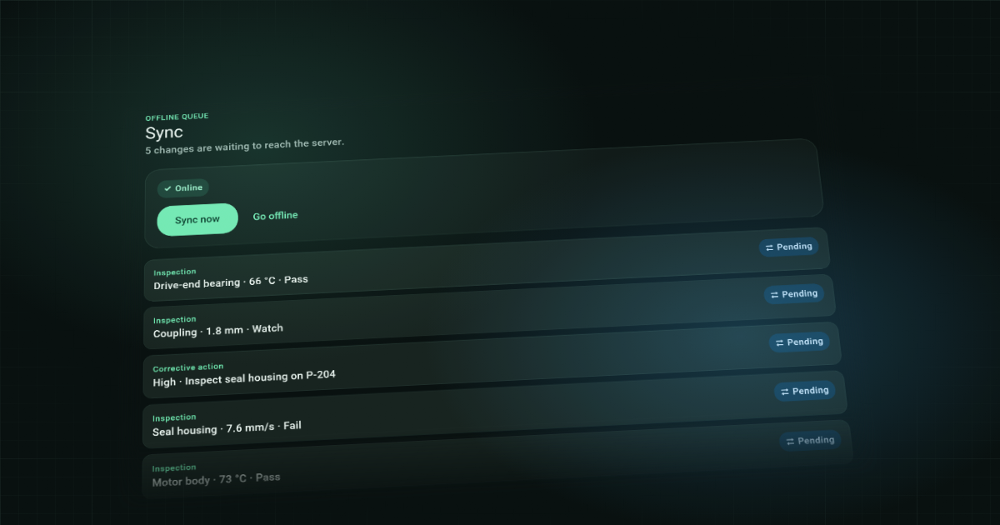
focus-sync The Sync queue: four inspections and a corrective action saved on the device, each Pending.
Stylized
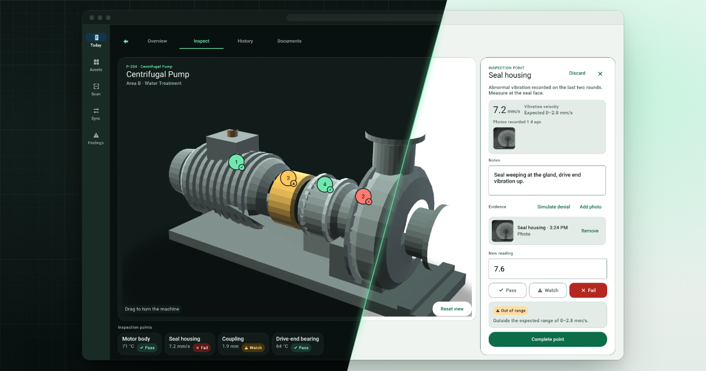
stylized-split · pick One inspection in Dark and Light, cut on a single diagonal through window and backdrop. 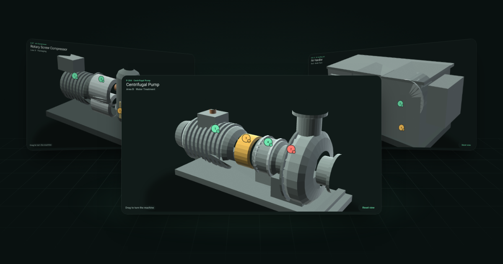
stylized-fleet The round's three machines in 3D: the compressor and the air handler turned away, the pump in front. 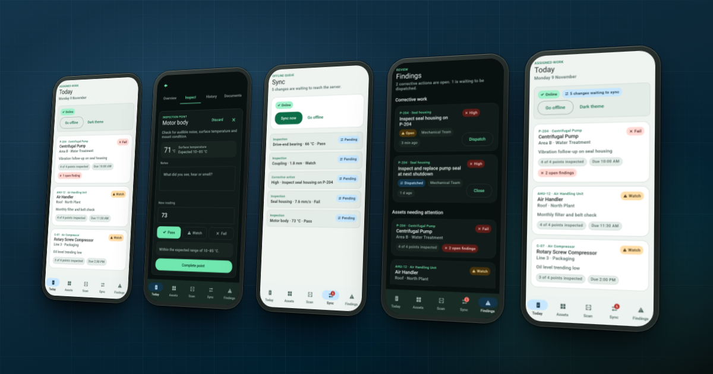
stylized-flow Today, a point, Sync, Findings and Today again at phone width, Light and Dark alternating, on one turned plane.
Titled (optional)
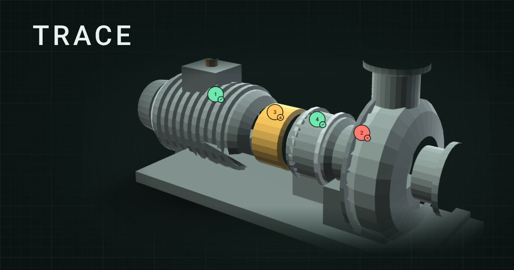
focus-pump-titled The 3D pump banner with the TRACE name in Roboto Medium (optional).
Heroes
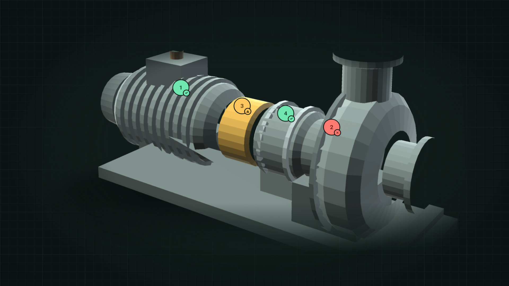
focus-pump-hero · 1920 × 1080 P-204, the CPU-drawn 3D centrifugal pump, with its four inspection points: Pass, Fail, Watch and Pass. 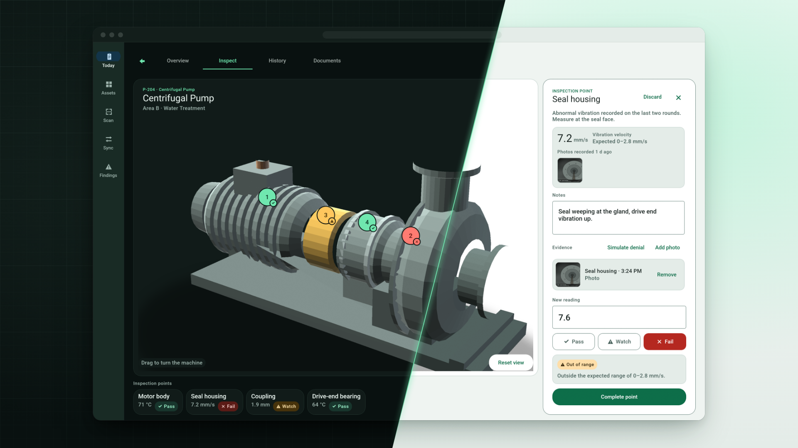
stylized-split-hero · 1920 × 1080 One inspection in Dark and Light, cut on a single diagonal through window and backdrop.